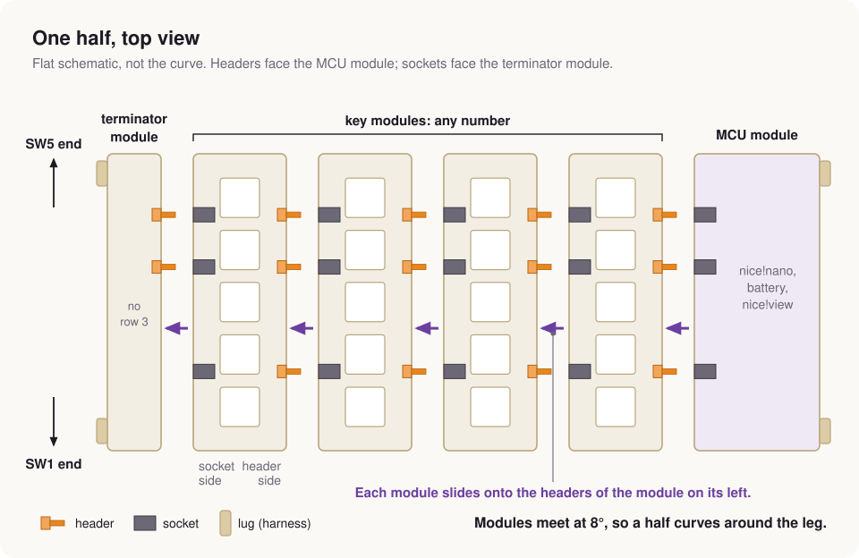

Every module has two long sides, named by the connector on them:
- The header side carries three headers (male, pins out) and the two guide pins. Headers face right, toward the MCU module.
- The socket side carries three sockets (female) and the two guide holes with their flaps.
The terminator module has a header side only, and the MCU module a socket side only, so no header pins stand exposed at either end. Their other long side is the free face, which carries the lugs for the harness.
The two ends of a module are the SW1 end and the SW5 end, named by the switch nearest each. SW1 is the bottom key.
This guide uses the terms in docs/glossary.md. Hover a part in any 3D view to see its name.
